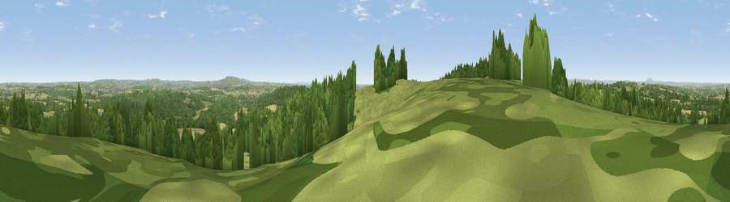

Viewpoint near Enville
#21386 in England · top 42% of its area beats it · near EnvilleThe view, rendered

A 360° render of this exact spot computed from the terrain model, tree cover and land cover — summer colours, afternoon light, calibrated against photographs of famous viewpoints. Real trees, hedges and buildings will differ in detail.
The panorama
Grey silhouette: terrain skyline in each direction (720 bearings, Earth curvature and refraction included). Dashed green: skyline with trees (+15 m) and buildings (+8 m) as obstacles. Blue strip: how far the ground is visible on each bearing.
Where the view opens
Wedge length = distance to the farthest visible ground on that bearing (vegetation-aware). Rings at 10, 25 and 50 km.
What fills the view
41% woodland · 33% grassland · 24% cropland · 2% built-up
Angular shares of the visible panorama (visual magnitude), not map area. Landscape diversity 0.51 (0–1 Shannon).
Key numbers
More beautiful places nearby
The staircase of upgrades: each row has a higher view potential than everything closer. Driving times are estimates from straight-line distance, calibrated against real road routing — check an actual route before setting out.
| Place | Direction | Drive | Score |
|---|---|---|---|
| Viewpoint near Enville | S · 0 km | ~1 min | 68.7 |
| Viewpoint near Enville | WSW · 1 km | ~3 min | 73.1 |
| Viewpoint near Clent | ESE · 13 km | ~23 min | 74.3 |
| Knowle Hill | WSW · 13 km | ~24 min | 75.5 |
| Viewpoint near Abberley | SSW · 19 km | ~33 min | 77.5 |
| Abberley Hill | SSW · 19 km | ~33 min | 80.4 |
| Viewpoint near Burwarton | W · 22 km | ~36 min | 83.4 |
| Titterstone Clee | WSW · 24 km | ~39 min | 83.8 |
52.46735, -2.27191 · source: screening · position refined by local search. Computed location — check access rights before visiting.